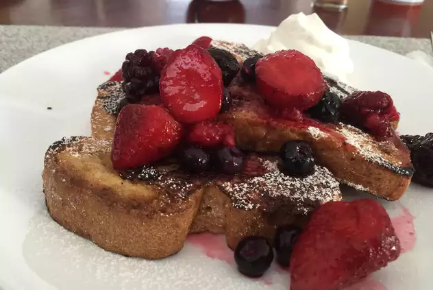

French Toast

Ingredients
- 2/3 cup milk
- 2 large eggs
- 1 teaspoon vanilla extract
- 1/4 teaspoon ground cinnamon
- salt
- 6 thick slices of bread
- 1 tablespoon butter
Steps
- Whisk milk, eggs, vanilla, cinnamon, and salt together in a shallow bowl.
- Lightly butter a griddle and heat over medium-high heat.
- Dunk bread in the egg mixture, soaking both sides. Transfer to the hot skillet and cook until golden, 3 to 4 minutes per side. Serve hot.